肝者，罢（读作pí，通“疲”字）极之本，魂之居也，其华在爪，其充在筋，以生血气，其味酸，其色苍，此为阳中之少阳，通于春气。
——黄帝内经·素问·六节脏象论

仲冬｜节气｜ 冬至 ｜时间｜ 十二月廿一日至一月五日
今年冬至需特别注意的健康问题：肺炎、咽喉肿痛、牙龈出血、皮肤病、心脏病
善养生者，必养冬至。冬至是养生的元点，因此《顺时生活》养生日历从冬至开始。
原料：黄芪、当归、大枣、川陈皮、羊肉、甘蔗、带皮生姜、花椒。
调料（后放）：黄酒、香菜、胡椒粉、盐。
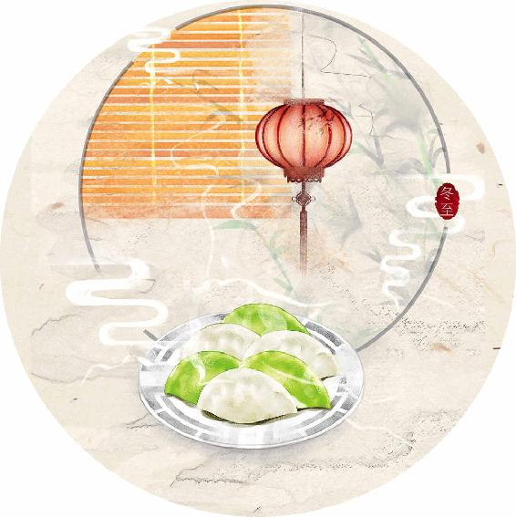
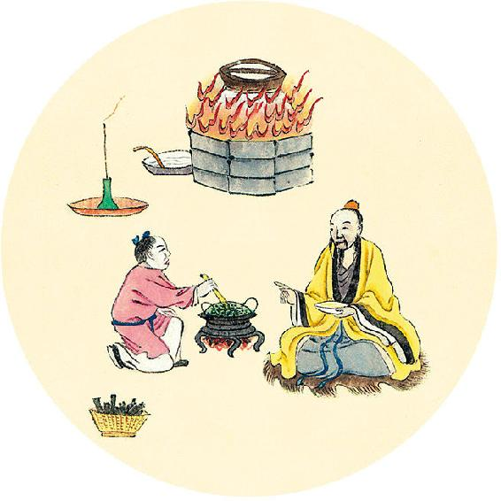
健康提示
今日冬至，以此为起点，我们开始新一年的养生。
冬至节气如果保养不好，可能影响后面一整年的健康；养得好，则能事半功倍。
1.灸：三九灸（做法见2020年12月23日）
2.察：睡前自我体检（方法见2020年12月25日）
3. 饮：庚子岁六气保健方（橘香梅子汤，做法见2021年1月16日）
4.食：补心养阳汤（做法见2020年12月26日）
5. 宜忌：冬至时人体的排毒能力弱，食品和用品尽量天然，远离添加剂和化学制剂。
2021年全年养生重点在1月27日、1月28日。
2021年传染病（时疫）预警见3月26日的内容。
草生五色，五色之变，不可胜视。草生五味，五味之美，不可胜极。嗜欲不同，各有所通。
——黄帝内经·素问·六节脏象论
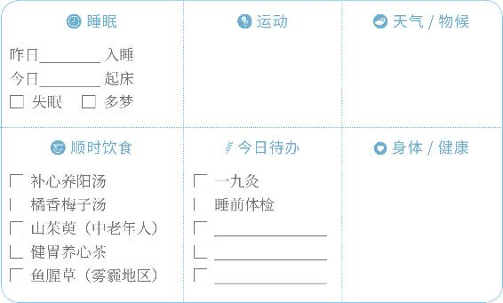
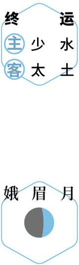
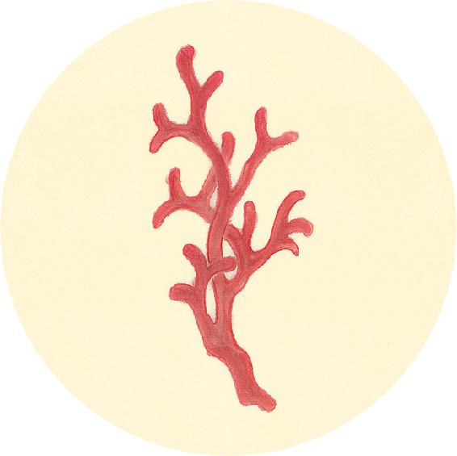
健康提示
冬至节气的养生功课：养心阳，防心脏问题。
庚子岁冬至特殊的养生要点——
保养重点：心、胃。
容易出现的问题：肺炎、咽喉肿痛、牙龈出血、皮肤病、心脏病。
冬至是心源性猝死的高危时节，今年尤其要注意。此时人体心阳最弱，宜喝“补心养阳汤”。遇雾霾天，可以用中药贴敷内关穴和膻中穴来保健（配方见11月1日）。
平时心血管亚健康的人、老年人，今冬要特别注意流感、肺炎等伤及心脏，引起肺心病。
【释义】草有五种不同的颜色，这五色的变化，是看不尽的。草有五种不同的气味，这五味的美妙也是不能穷尽的。对色、味的不同偏好，分别通于不同的脏腑。
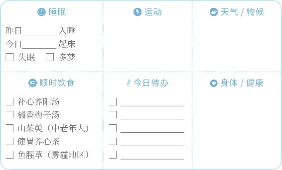
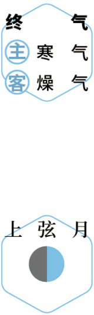
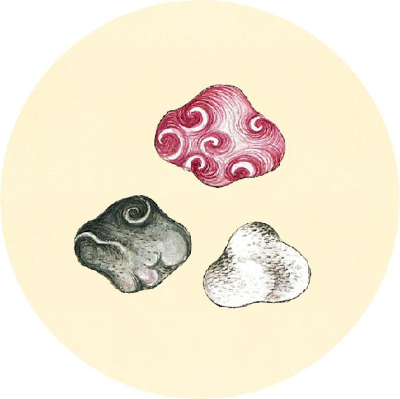
健康提示
三九灸
从冬至开始做艾灸（气虚、怕烟的人用温经艾灸贴），每九天做1～3次（根据体质选择次数），做到三九或四九，是祛病强身的好方法。
重点部位：
小腿——足三里、三阴交、膝盖
腹部——神阙（肚脐）、中脘、关元
后背——脊柱两侧、臀部八髎穴
肩颈——劳损部位用温经艾灸贴
天食（sì）人以五气，地食（sì）人以五味。
——黄帝内经·素问·六节脏象论
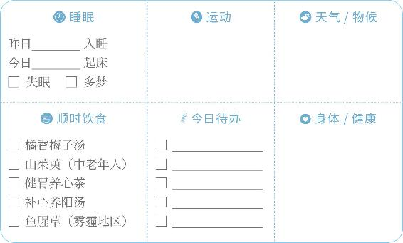
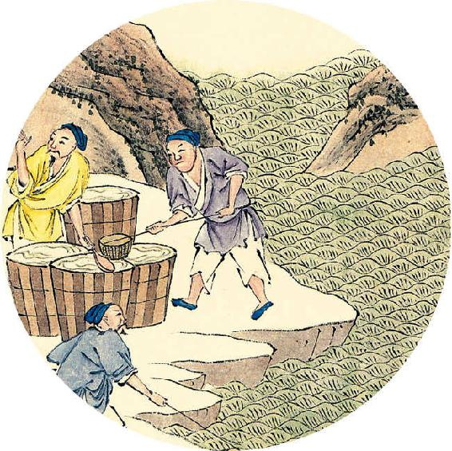
二十四节气茶养生
今年冬至节气品茶推荐：黑茶。
冬至是一年中人体阳气最弱的时候，不适宜多饮茶，如果要喝，黑茶比较适宜。
健胃养心茶
原料：金丝小枣，喜饮茶者可加黑茶6克。
做法：将小枣放入无油炒锅，炒到外皮发黑，装瓶密封。每次取数粒，与黑茶一起冲泡。
【释义】天以木、火、土、金、水五气滋养人，地以酸、苦、甘、辛、咸五味滋养人。
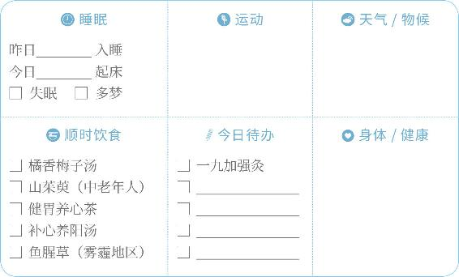
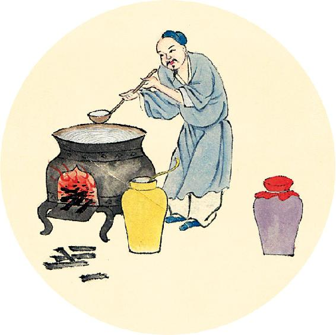
一候反思
冬至是察病好时机，身体有问题，在冬至前后会表现得更明显。
在冬至前后几天，睡前安静平躺，观察一下身体哪个部位有不一样的感觉。
2020年冬至察病的重点：
失眠、半夜醒来 □ 是 □ 否
小腹发凉 □ 是 □ 否
心脏不适 □ 是 □ 否
呼吸不畅 □ 是 □ 否
五气入鼻，藏于心肺，上使五色修明，音声能彰。
——黄帝内经·素问·六节脏象论
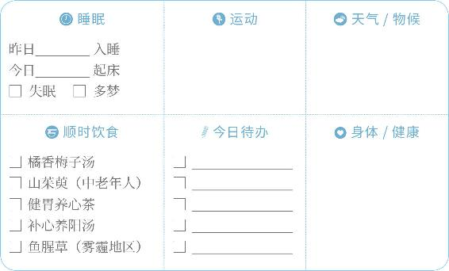
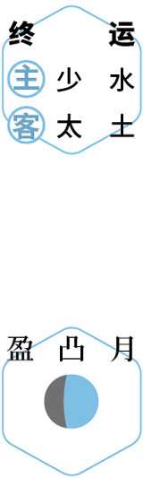
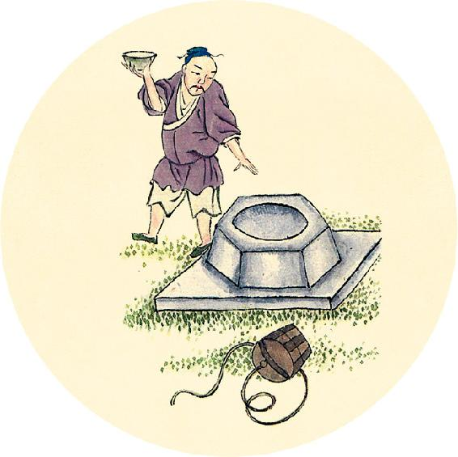
节气食方
补心养阳汤（羊汤版通用配方，素食版见1月2日）
原料（4～6人量）：黄芪100克（感冒或遇连续2天雾霾不要放），当归20克（若因雾霾引发皮肤过敏不要放），大枣8个，川陈皮1/2个，羊肉500～1000克，甘蔗3节（或牛蒡），带皮生姜2块，湿气重的人加花椒（每人7粒）。
调料（后放）：黄酒50毫升，香菜50克，胡椒粉、盐适量。
做法见2020年12月27日。
【释义】五行之气（木、火、土、金、水）由鼻吸入，贮藏于心肺，其气上升，使面部五色明润，声音洪亮。
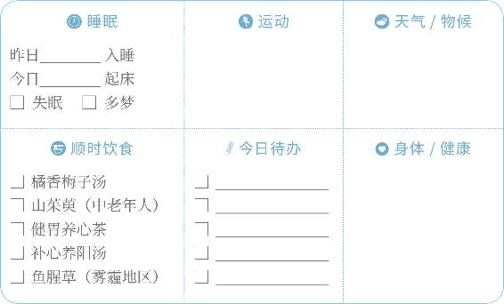
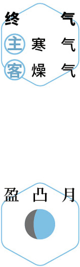
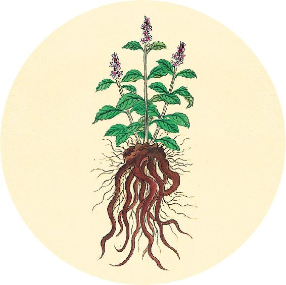
节气食方
补心养阳汤（羊汤版）
做法：
1. 将黄芪、当归用清水浸泡30分钟。
2. 甘蔗去皮后纵向剖开，生姜拍扁。
3. 在锅内烧开水，羊肉下锅煮出血沫，将水倒掉，羊肉冲洗干净。
4. 锅内重新加水，将全部原料一起下锅，大火煮开后，放黄酒，转中火炖1小时。
5. 放入胡椒粉，关火起锅。
6. 在汤碗里放入香菜末和少许盐，将羊肉汤盛入汤碗。
五味入口，藏于肠胃，味有所藏，以养五气，气和而生，津液相成，神乃自生。
——黄帝内经·素问·六节脏象论
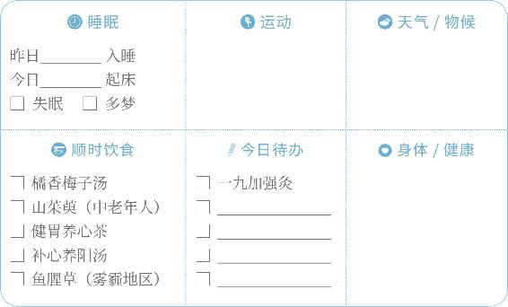
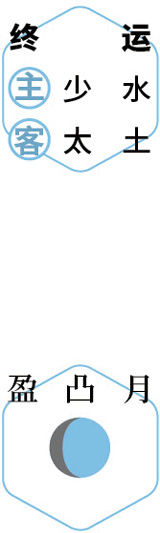
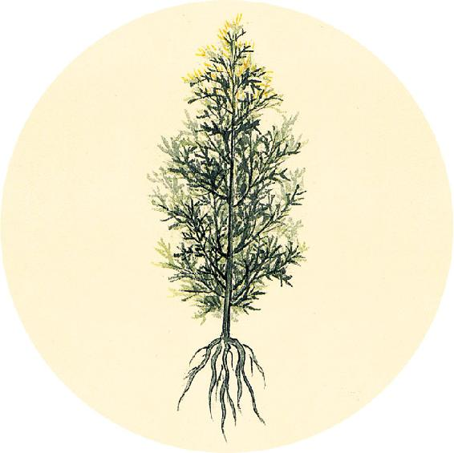
健康提示
补心养阳汤已连喝7天。回顾一下庚子岁是否有过这些问题：
得过肺炎 □ 是 □ 否 腰腹冷痛 □ 是 □ 否
小腿浮肿 □ 是 □ 否 女性白带多 □ 是 □ 否
经常起夜 □ 是 □ 否
秋冬感冒超过2天 □ 是 □ 否
立秋后一个月内有过半夜冷醒 □ 是 □ 否
立秋后一个月内有过受凉引起腹泻 □ 是 □ 否
冬至前后失眠 □ 是 □ 否
有一个答“是”，补心养阳汤一直喝到立春之前。
【释义】五味入于口中，贮藏于肠胃，经消化吸收，以养五脏之气，脏气调和则能生化，津液随之生成，人的神气自然就健旺了。
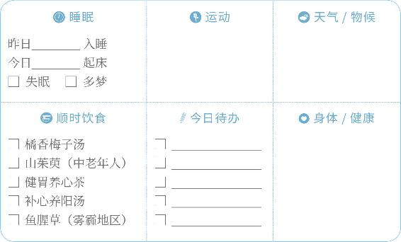
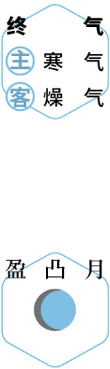
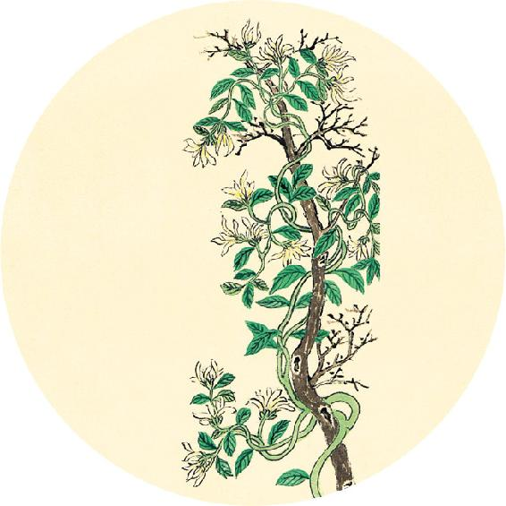
健康提示
庚子岁冬至吃银耳的推荐搭配：桂圆。
银耳桂圆羹
原料：银耳1小朵，桂圆肉（或桂圆去壳）30粒左右，怕上火者加百合1小把。
吃法：桂圆肉久炖后，营养和甜香味溶入银耳羹中，桂圆本身已基本无味，食用时可以挑出不吃。
功效：滋阴补血、养心安神、改善气色。
注意：桂圆要久炖才不易上火。
心者，生之本，神之处也；其华在面，其充在血脉，为阳中之太阳，通于夏气。
——黄帝内经·素问·六节脏象论
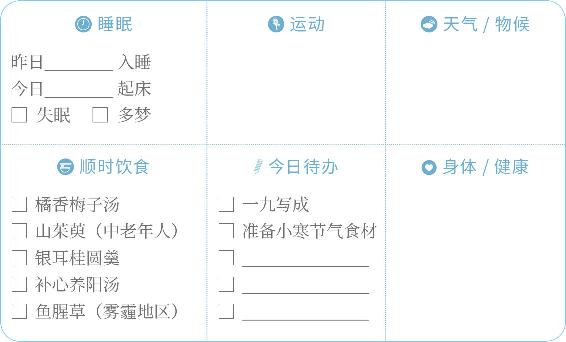
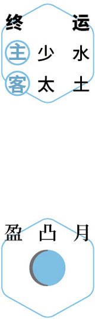
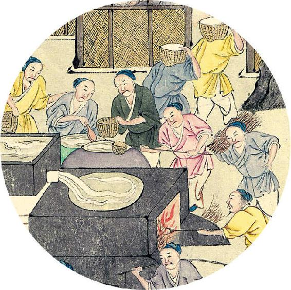
二候反思
前十天身体是否出现不适现象？在哪些部位？对比上一次冬至有什么不同？
冬至出现的亚健康现象：
今年新发生______________________________________
今年再次出现____________________________________
今年有好转______________________________________
1. 翻到2021年7月16日，把以上记录的问题进行归类。
2. 在新的一年里，针对这些问题进行调理。
【释义】心，是生命的根本，是藏神的地方；其荣华表现在面部，其充养的组织在血脉，是阳中的太阳，与夏季之气相通。
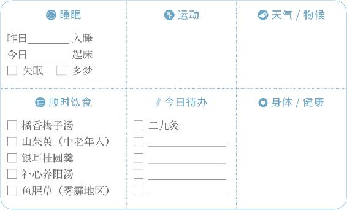
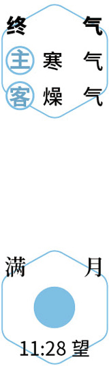
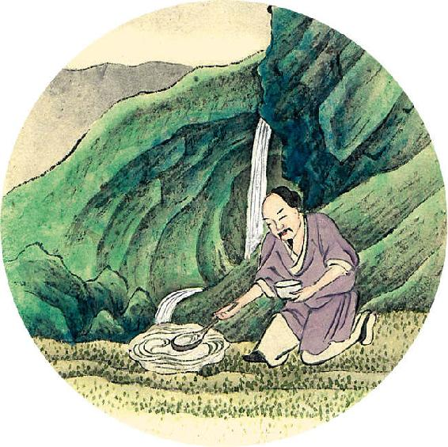
年终总结：回顾2020年养生计划
这一年身体对病毒的抵抗力如何？
在健康方面有哪些改善？
1. ______________________________________
2. ______________________________________
3. ______________________________________
4. ______________________________________
2020年养生的首要目标是否达成？
______________________________________
肺者，气之本，魄之处也，其华在毛，其充在皮，为阳中之太阴，通于秋气。
——黄帝内经·素问·六节脏象论
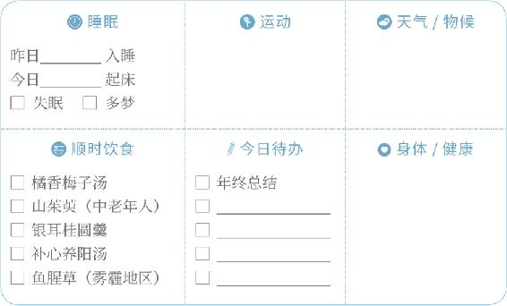
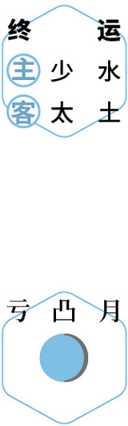
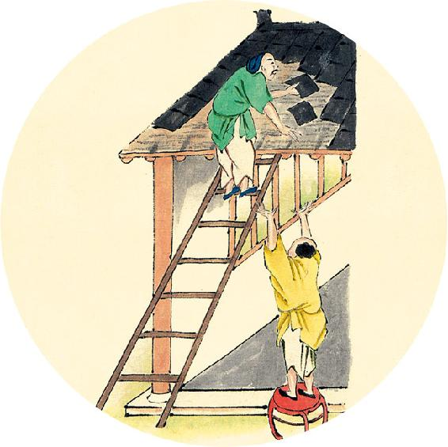
开年计划:请写下2020年困扰您的健康方面的问题。
1. ______________________________________
2. ______________________________________
3. ______________________________________
4. ______________________________________
5. ______________________________________
从上面选出最需要改善的一个，列为2021年养生的首要目标______________________________________
【释义】肺，是气的根本，是藏魄的地方，其荣华表现在毫毛，其充养的组织在皮肤，是阳中的太阴，与秋季之气相通。
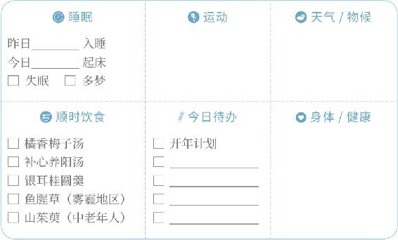
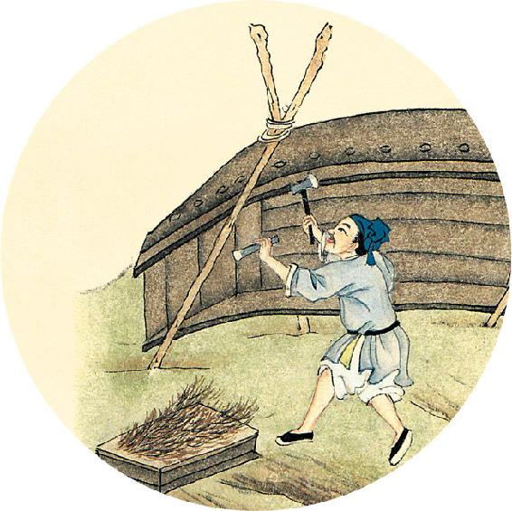
节气食方
补心养阳汤（素食版通用配方）
原料（4～6人量）：黄芪100克（感冒或遇连续2天雾霾不要放），当归20克（若因雾霾引发皮肤过敏不要放），大枣8个，川陈皮1/2个，榴梿内壳（白色部分）及榴梿核适量。
做法：
1. 将黄芪、当归用清水浸泡30分钟。
2. 加入其他原料一起炖煮1小时。
3. 食用时可以加红糖调味。
肾者，主蛰，封藏之本，精之处也，其华在发，其充在骨，为阴中之少阴，通于冬气。
——黄帝内经·素问·六节脏象论
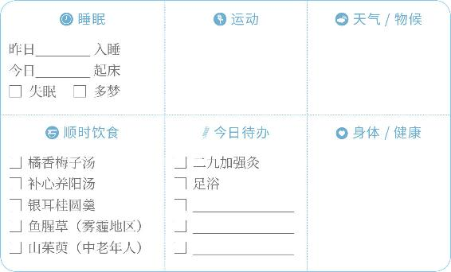
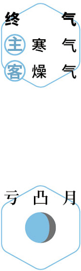
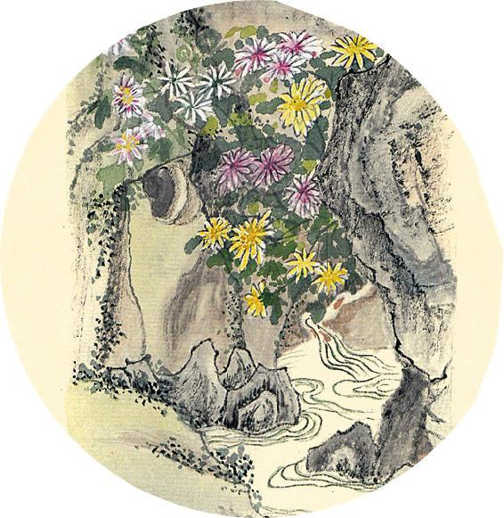
食材准备
后天进入小寒节气。
1.糯米红豆饭（庚子岁配方）
原料：赤小豆、黍米、糯米、油、盐、紫苏子。
2.银耳百合羹
原料：银耳、百合。
3.节气养生茶饮
原料：咖啡、牛奶、红糖。
4.庚子岁六气保健方：橘香梅子汤
原料：川红橘或橙子、罗汉果、牛蒡、枸杞、甘草陈皮梅子汤。
5.腊八粥
原料：（见1月13日）。
【释义】肾，主管蛰伏，是封藏的根本，是藏精的地方，其荣华表现在头发，其充养的组织在骨，是阴中的少阴，与冬季之气相通。
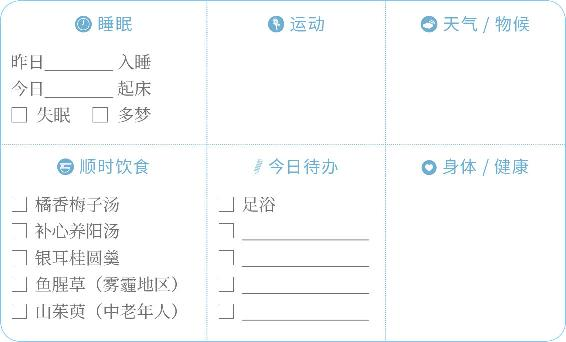
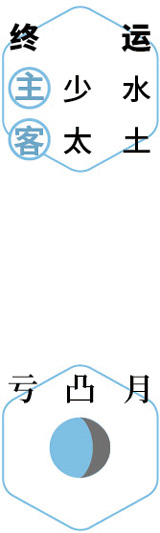
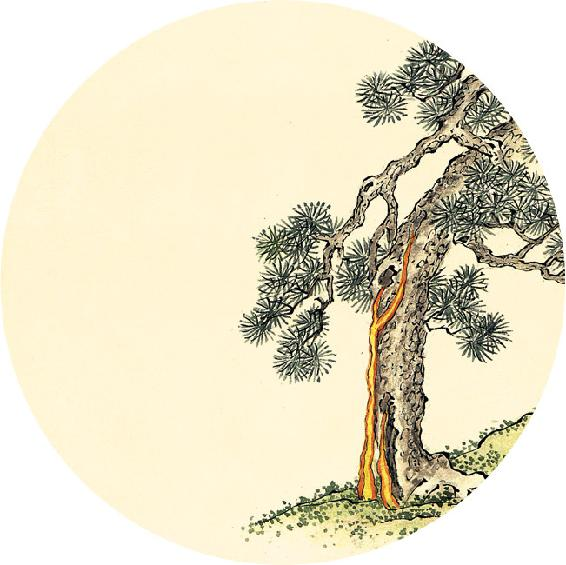
节气总结
喝补心养阳汤的次数________
吃银耳桂圆羹的次数________
喝橘香梅子汤的次数________
做三九灸的次数________
身体哪些方面有改善______________________________________
如果由于感冒等原因，喝补心养阳汤少于3次，请翻到4月28日，在选项1打钩。
肝者，罢（读作pí，通“疲”字）极之本，魂之居也，其华在爪，其充在筋，以生血气，其味酸，其色苍，此为阳中之少阳，通于春气。
——黄帝内经·素问·六节脏象论
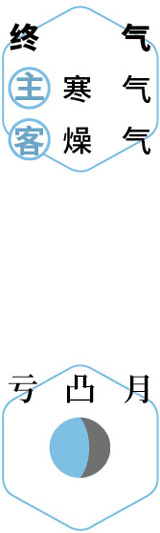